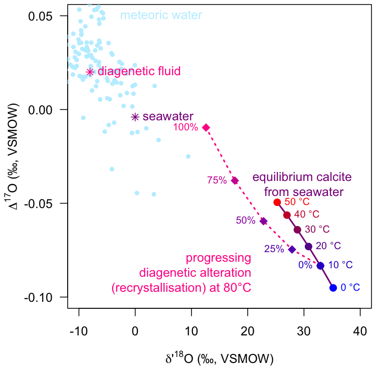
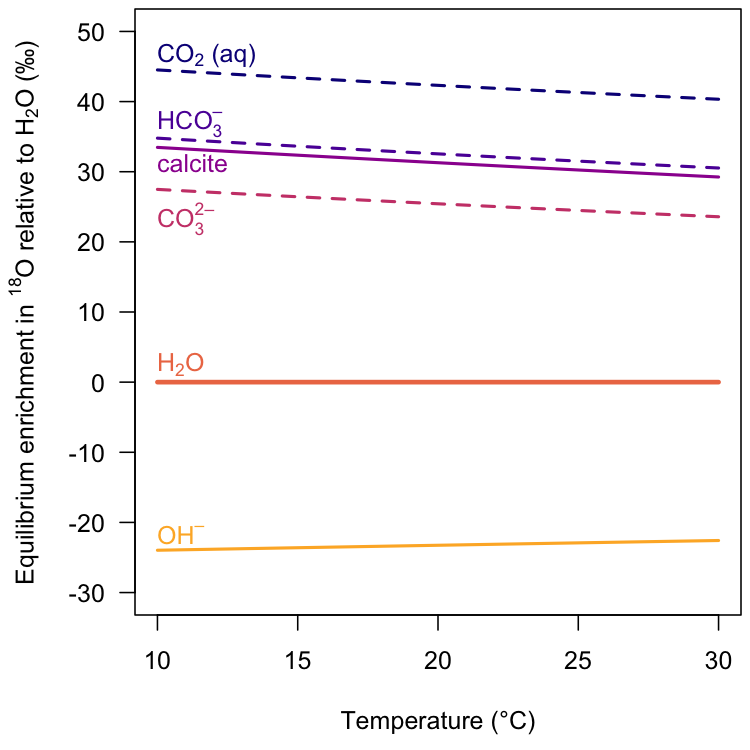

isogeochem makes working with stable oxygen, carbon, and clumped isotope data straightforward and reproducible. It offers tools to quickly calculate:
- carbonate δ18O, δ17O, ∆47, and ∆48 values at a given temperature
- carbonate growth temperatures from δ18O, ∆47, and ∆48 values
- isotope fractionation factors, e.g., carbonate/water, quartz/water
- model DIC speciation as a function of temperature, pH, and salinity
- convert between the VSMOW and VPDB scales
The list of available proxy–temperature calibrations is growing with each new released version. Please get in touch if you have suggestions to include!
Getting started
Installation
Install the released version of isogeochem from CRAN.
install.packages("isogeochem")Install the development version of isogeochem from GitHub.
if (!require("devtools")) install.packages("devtools")
if (!require("rmarkdown")) install.packages("rmarkdown")
devtools::install_github("davidbajnai/isogeochem", build_vignettes = TRUE)Vignettes
Case studies demonstrating the use and scope of the functions in isogeochem are available as vignettes.
browseVignettes("isogeochem")Dual clumped isotope thermometry
Use D47() and D48() to calculate equilibrium carbonate clumped isotope values (∆47, ∆48) for a given temperature. temp_D47() calculates carbonate growth temperatures from ∆47 values, while temp_D48() calculates growth temperature corrected for kinetic effects considering both the ∆47 and the ∆48 value.
if (!require("shades")) install.packages("shades")
# Model equilibrium carbonate ∆47 and ∆48 values
temp = seq(0, 100, 10) # temperature range: 0—100 °C
D47eq = D47(temp, eq = "Fiebig21")
D48eq = D48(temp, eq = "Fiebig21")
# Sample data
D47_coral = 0.617; D47_coral_err = 0.006
D48_coral = 0.139; D48_coral_err = 0.022
D47_speleo = 0.546; D47_speleo_err = 0.007
D48_speleo = 0.277; D48_speleo_err = 0.029
## Plot in ∆47 vs ∆48 space ##
plot(0, type = "l", axes = TRUE, ylim = c(0.4, 0.7), xlim = c(0.1, 0.3),
ylab = expression(Delta[47] * " (CDES90, ‰)"),
xlab = expression(Delta[48] * " (CDES90, ‰)"),
lty = 0, font = 1, cex.lab = 1, las = 1)
# Plot the equilibrium curve and points
lines (D48eq, D47eq, col = "purple", lwd = 2)
points(D48eq, D47eq, col = shades::gradient(c("blue", "red"), length(temp)),
pch = 19, cex = 1.2)
# Plot the sample data,
# ... the kinetic slopes,
# ... and calculate growth temperatures corrected for kinetic effects
# ... using a single function!
temp_D48(D47_coral, D48_coral, D47_coral_err, D48_coral_err, ks = -0.6,
add = TRUE, col = "seagreen", pch = 15)
#> temp temp_err
#> 1 38 6
temp_D48(D47_speleo, D48_speleo, D47_speleo_err, D48_speleo_err, ks = -1,
add = TRUE, col = "darkorange", pch = 17)
#> temp temp_err
#> 1 30 9
# Add labels to the plot
text(D48(temp, eq = "Fiebig21"), D47(temp, eq = "Fiebig21"), paste(temp, "°C"),
col = shades::gradient(c("blue", "red"), length(temp)), pos = 4, cex = 0.8)Triple oxygen isotopes
d17O_c() calculates equilibrium carbonate oxygen isotope values (δ18O, δ17O, ∆17O) for a given temperature and ambient water composition. Use the mix_d17O() function to calculate mixing curves in triple oxygen isotope space, e.g., for modeling diagenesis.
if (!require("shades")) install.packages("shades")
# Model equilibrium calcite precipitating from seawater
temp_sw = seq(0, 50, 10) # temperature range: 0—50 °C
d18O_sw = 0 # d18O value of seawater
D17O_sw = -0.004 # D17O value of seawater
d18Op = prime(d17O_c(temp_sw, d18O_sw, D17O_sw, eq18 = "Daeron19")[, 1])
D17O = d17O_c(temp_sw, d18O_sw, D17O_sw, eq18 = "Daeron19")[, 3]
# Model progressing meteoric diagenetic alteration
d18O_ds = -8 # d18O value of diagenetic fluid
D17O_ds = 0.020 # D17O value of diagenetic fluid
em_equi = d17O_c(temp = 10, d18O_H2O = d18O_sw, D17O_H2O = D17O_sw,
eq18 = "Daeron19") # equilibrium endmember
em_diag = d17O_c(temp = 80, d18O_H2O = d18O_ds, D17O_H2O = D17O_ds,
eq18 = "Daeron19") # diagenetic endmember
mix = mix_d17O(d18O_A = em_equi[1], d17O_A = em_equi[2],
d18O_B = em_diag[1], d17O_B = em_diag[2], step = 25)
## Plot in ∆17O vs d'18O space ##
plot(0, type = "l", ylim = c(-0.1, 0.05), xlim = c(-10, 40),
xlab = expression(delta * "'" ^ 18 * "O (‰, VSMOW)"),
ylab = expression(Delta ^ 17 * "O (‰, VSMOW)"),
lty = 0, font = 1, cex.lab = 1, las = 1)
# Plot meteoric waters from the build-in dataset
points(prime(meteoric_water$d18O), D17O(meteoric_water$d18O, meteoric_water$d17O),
col = "lightblue1", pch = 20)
text(-4, 0.05, "meteoric water", pos = 4, col = "lightblue1")
# Plot the composition of the fluids
points(prime(d18O_sw), D17O_sw, col = "darkmagenta", pch = 8) # seawater
text(prime(d18O_sw), D17O_sw, "seawater", pos = 4, col = "darkmagenta")
points(prime(d18O_ds), D17O_ds, col = "deeppink", pch = 8) # diagenetic fluid
text(prime(d18O_ds), D17O_ds, "diagenetic fluid", pos = 4, col = "deeppink")
# Plot the equilibrium curve and points
lines(d18Op, D17O, col = "darkmagenta", lwd = 2)
points(d18Op, D17O, pch = 19, cex = 1.2,
col = shades::gradient(c("blue", "red"), length(temp_sw)))
text(d18Op, D17O, paste(temp_sw, "°C"), pos = 4, cex = 0.8,
col = shades::gradient(c("blue", "red"), length(temp_sw)))
text(30, -0.05, paste("equilibrium calcite \nfrom seawater"),
pos = 3, col = "darkmagenta")
# Plot the mixing model between the equilibrium and diagenetic endmembers
lines(prime(mix[, 1]), mix[, 2], col = "deeppink", lty = 3, lwd = 2)
points(prime(mix[, 1]), mix[, 2], pch = 18, cex = 1.5,
col = shades::gradient(c("#3300CC", "deeppink"), length(mix[, 2])))
text(prime(mix[, 1]), mix[, 2], paste(mix[, 3], "%", sep = ""), pos = 2, cex = 0.8,
col = shades::gradient(c("#3300CC", "deeppink"), length(mix[, 3])))
text(22, -0.09, paste("progressing", "\ndiagenetic alteration", "\n(recrystallisation) at 80°C", sep =""),
pos = 2, col = "deeppink")
Thermometry
Use isogeochem to calculate crystallization temperatures from carbonate δ18O and ∆47 values.
# Temperature from D47 with or without errors
temp_D47(D47_CDES90 = 0.601, eq = "Petersen19")
#> [1] 24.9
temp_D47(D47_CDES90 = 0.601,
D47_error = 0.008 ,
eq = "Anderson21")
#> temp temp_err
#> 1 22.6 2.7
# Temperature from d18O
temp_d18O(
d18O_c_VSMOW = 30,
d18O_H2O_VSMOW = 0,
min = "calcite",
eq = "Watkins13")
#> [1] 25.9Fractionation factors
Use isogeochem to calculate 16O/18O fractionation factors at given temperatures.
if (!require("viridisLite")) install.packages("viridisLite")
plot(0, type = "l", las = 1, yaxt = "n",
xlim = c(10, 30), ylim = c(-30, 50),
xlab = "Temperature (°C)",
ylab = expression("Equilibrium enrichment in "^18*"O relative to H"[2]*"O (‰)"))
axis(2, seq(-30, 50, 10), las = 1)
temps = seq(10, 30, 1)
d18O_H2O_VSMOW = 0
cols = viridisLite::viridis(7, option = "C")
text(10, 45, expression("CO"[2]*" (aq)"), col = cols[1], adj = c(0, 0))
lines(temps, A_from_a(a18_CO2aq_H2O(temps), d18O_H2O_VSMOW),
lwd = 2, lty = 2, col = cols[1])
text(10, 35, expression("HCO"[3]^"–"), col = cols[2], adj = c(0, 0))
lines(temps, A_from_a(a18_HCO3_H2O(temps), d18O_H2O_VSMOW),
lwd = 2, lty = 2, col = cols[2])
text(10, 30, "calcite", col = cols[3], adj = c(0, 0))
lines(temps, A_from_a(a18_c_H2O(temps, "calcite", "Daeron19"), d18O_H2O_VSMOW),
lwd = 2, lty = 1, col = cols[3])
text(10, 21, expression("CO"[3]^"2–"), col = cols[4], adj = c(0, 0))
lines(temps, A_from_a(a18_CO3_H2O(temps), d18O_H2O_VSMOW),
lwd = 2, lty = 2, col = cols[4])
text(10, 1, expression("H"[2]*"O"), col = cols[5], adj = c(0, 0))
lines(temps, rep(d18O_H2O_VSMOW, length(temps)),
lwd = 3, lty = 1, col = cols[5])
text(10, -23, expression("OH"^"–"), col = cols[6], adj = c(0, 0))
lines(temps, B_from_a(a18_H2O_OH(temps, eq = "Z20-X3LYP"), d18O_H2O_VSMOW),
lwd = 2, lty = 1, col = cols[6])
Utility functions
# Convert between the VSMOW and VPDB scales:
to_VPDB(32)
#> [1] 1.05032
to_VSMOW(1)
#> [1] 31.95092
# Convert between classical delta and delta prime values:
prime(10)
#> [1] 9.950331
unprime(9.95)
#> [1] 9.999666
# Calculate isotope fractionation factors:
a_A_B(A = 30.40, B = 0.15)
#> [1] 1.030245
epsilon(a_A_B(A = 30.40, B = 0.15))
#> [1] 30.24546Datasets
Within isogeochem you have quick access to important datasets.
| Name | Description | Reference |
|---|---|---|
devilshole |
The original Devils Hole carbonate δ18O time series | Winograd et al. (2006) |
LR04 |
A benthic foraminifera δ18O stack | Lisiecki & Raymo (2005) |
GTS2020 |
An abridged version of the GTS2020 oxygen isotope stack | Grossman & Joachimski (2020) |
meteoric_water |
A compilation of meteoric water δ18O and δ17O values | Barkan & Luz (2010), Aron et al. (2021) |
For more information on the datasets please have a look at the corresponding documentation, e.g., ?devilshole
See also
There are several other R packages that complement isogeochem and are worth checking out:
viridisLite and viridis produce color-blind and black-and-white printer friendly color scales.
clumpedr works with isoreader to read in raw measurement data and reproducibly process the results to clumped isotope values.
seasonalclumped can be used to reconstruct temperature and salinity variations from seasonal oxygen and clumped isotope records.
deeptime adds geological timescales to ggplots.